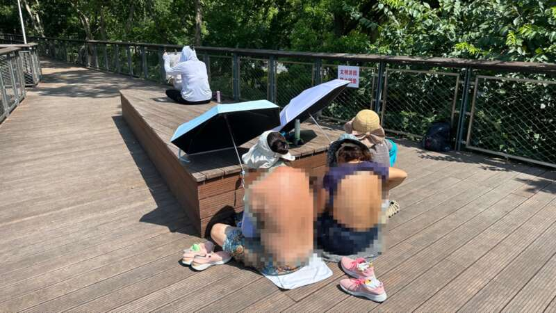
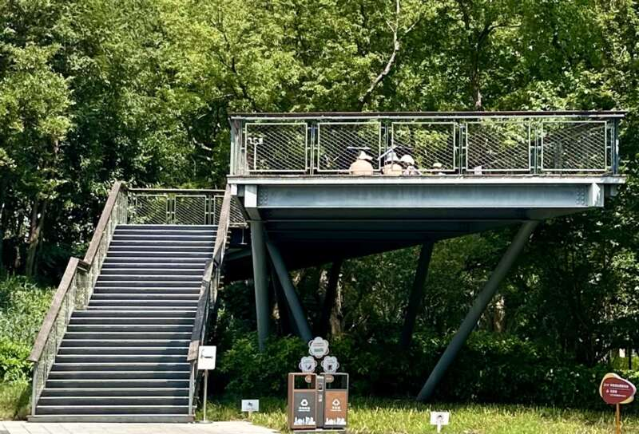
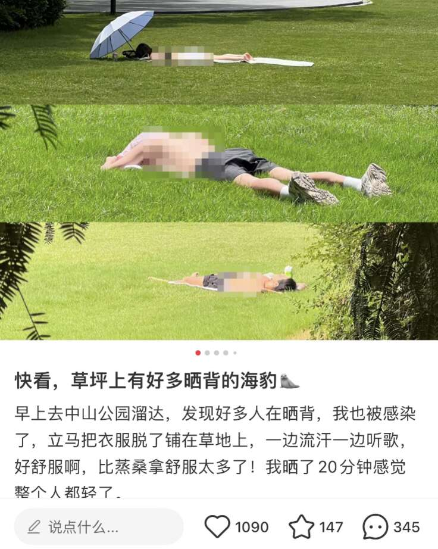
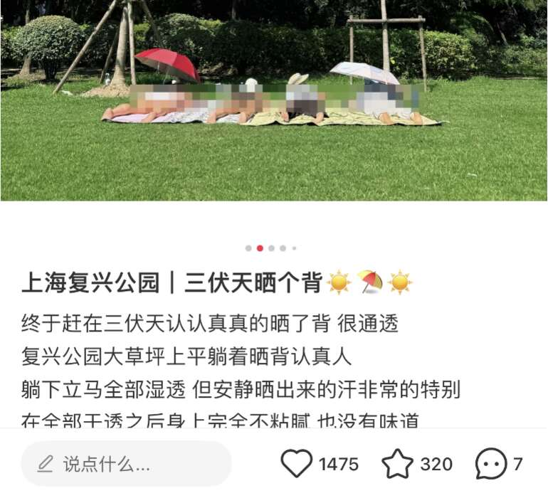
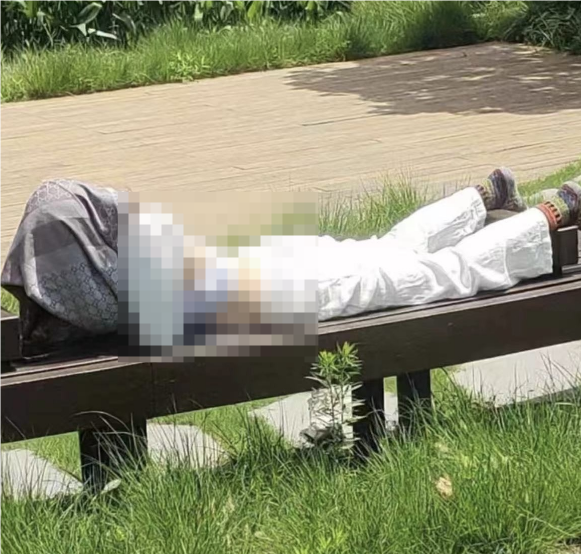
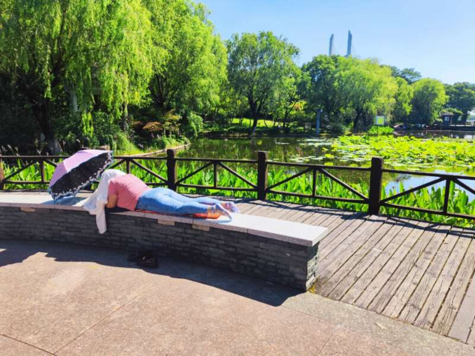

最近网上盛传
三伏天晒背
是不要钱的“天灸”——天然艾灸
因此，入伏以来
一股”晒背”热潮席卷公园
草坪上、座椅上、栈道上
不时见到他们的身影

△公园栈道上的晒背族
“公园空气好”
8月2日9点多，记者在上海和平公园看到，有三位女士坐在栈道上晒背。她们戴着遮阳帽和墨镜，面前架着遮阳伞，其中两人将后背上衣撩起，内衣解开，整个背部暴露在阳光下，皮肤已微微发红。
“我们晒了好几天了，比桑拿还舒服，既不闷，又排湿气，效果很好。”面对记者搭讪，一名女士表示，架伞是为了不被面前的探头拍到。至于为何不在家里晒，对方称“公园空气好呀！”

△从地面望去，可以清楚看到她们的后背
公园保安表示，每天上午八九时前和下午三四时后是“晒背族”出现高峰，有些女士直接撩起上衣晒，看到保安又迅速将上衣放下。对于特别不雅观的“晒背族”，保安都会用执法记录仪取证后再去劝阻。
在某社交平台上，以“晒背，上海”为关键词搜索，出现了1800多篇笔记，其中，去公园晒背更是流行，还有人相约共赴“公园瑜伽晒背局”。
网友发布的公园“晒背族”照片中，年轻女孩多身着瑜伽服趴着晒，男士喜欢赤裸上身穿短裤坐着晒，也有上年纪的女性解开内衣晒。


园方：左右为难
和平公园园长胡聿丞说，公园一向以包容的心态满足游客需求，近期却被“晒背”搞得心力交瘁：来公园晒背的由于衣着暴露常被其他游客投诉，然而园方劝阻后，又常被“晒背族”投诉。
很多年轻家长表示对于“晒背族”很反感，觉得这些人影响小孩身心健康。一些老年人也常和保安反映“太难看”。
但因为保安没有执法权，往往对“晒背族”多劝几句就被会投诉，有些老人趴着长时间不动，保安担心他们中暑，经常去问问，结果反被投诉骚扰。
面对两边的投诉，公园方无奈表示，我们成了“三夹板”。

黄浦区绿化管理所公园管理科科长臧军表示，目前公园一般会从文明游园或保护个人隐私的角度去劝晒背族们不要赤膊或暴露敏感部位。
甚至有的公园在无奈之下只能派几名保安，将“辣眼睛”的“晒友”围起来，为其充当“人肉屏风”。此外，“我们也很担心，在高温下暴晒20分钟，且不说会不会晒伤，这是很可能得热射病的！”

市民：不应影响别人的游园体验
虽然《上海市公园文明游园守则》（2018版）第五条明确，游客应“自觉维护游园秩序，不随意卧躺，不赤膊游园”，但针对“晒背”并没有相关条文禁止，因此园方在实际管理时面临“无据可依”的困境。
记者在采访中发现，很多市民并不赞同“随意大小晒”，认为公共场合衣着裸露“太不雅观”。有市民表示：“虽然这是个人喜好，但前提和底线应该是不能影响别人的游园体验。”
胡聿丞表示，目前从游客反响来看，反对不雅晒背的呼声更高，希望“晒背族”能遵守公序良俗，在适宜的场所养生。
网友对在公园晒背的行为
也各持己见
有人认为公园
不单是锻炼、养生的场所
也是很多人散步或欣赏花草的地方
公共场合衣着裸露“太不雅观”
但也有网友认为
这在国外是很普遍的行为
又没有影响到他人
还有网友直接给出建议
“园方可以直接划分出晒背区”
“在家里的阳台窗前其实也可以晒背”
医生提醒：晒背的时间要掌握好
不少分享的网友都提到，三伏天晒背主要是为了养阳，这样做可以让体内的伏邪排出体外，不仅能驱寒保暖，还能缓解抑郁、改善体质。那么，这种说法究竟有没有依据呢？
对此，江苏省中西医结合医院治未病中心主任、主任中医师韩晓明表示，从保健角度来说，晒背是有用的：“因为我们背上有两个经络，一个叫督脉、一个叫膀胱经，是需要阳气的蒸腾才能达到效果的。”
中医看来，阳气足了，寒湿就少了。不过，韩晓明医生表示，三伏天晒背，还是要根据个人体质情况来判断，三类人比较适合。
“适合本来就比较体虚的，比如说小姑娘月经期间她比较怕冷，到了三伏天后空调一吹就感到非常寒冷；二是适合中医讲叫肝气郁结的人群；三就是老年人，中医讲就是体内肾气脾气肝气都会有相应的不足。”
医生提醒，夏季温度高太阳毒辣，晒背的时间要掌握好。第一次晒背时间在20分钟左右，循序增加时间，一般体质不宜超过30分钟，对紫外线过敏和“三高”人群不建议晒背。
“比如早上6点到9点，还有下午4点到6点，这个时间晒比较合适，晒的时候还要注意擦防晒霜。”
医生表示，三伏天是自然界阳气最盛的时候，此时也是冬病夏治的最佳时间。如果有需要，市民还可以尝试三伏贴，改善体质。饮食上，宜清淡多汁、易消化为主，可多吃些新鲜的蔬菜水果。